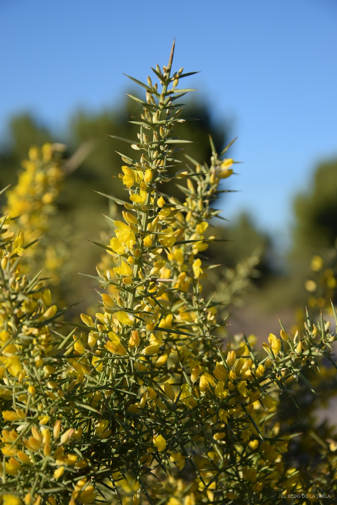

Ayuntamiento de Senés
JARDIN BOTANICO DE ESPECIES AUTOCTONAS DE SENES

Ulex parviflorus

La aliaga (Ulex parviflorus) es un arbusto perenne espinoso típico del ecosistema mediterráneo, ampliamente distribuido en zonas secas, soleadas y de suelos pobres o calizos. Presenta un porte denso y muy ramificado, pudiendo alcanzar hasta 2 metros de altura en condiciones favorables.
Sus hojas se encuentran reducidas a espinas rígidas, lo que le permite reducir la pérdida de agua y adaptarse a climas áridos. Sus flores, de color amarillo intenso, son muy abundantes y tienen una gran importancia ecológica al atraer a numerosos polinizadores y aportar color al paisaje.
La aliaga es una especie característica de la región mediterránea, donde crece de forma natural en zonas secas, soleadas y con escasa humedad. Se adapta especialmente bien a suelos pobres, pedregosos y calizos, siendo muy frecuente en laderas, monte bajo y terrenos degradados. Su gran resistencia a la sequía la convierte en una planta dominante en ambientes semiáridos.
La aliaga ha tenido diversos usos tradicionales, aunque principalmente se ha aprovechado como combustible y material vegetal. Su estructura leñosa y su abundancia la han convertido en una planta útil en el entorno rural.
La aliaga simboliza la resistencia y la dureza del medio mediterráneo. Sus espinas representan la defensa y la adaptación a condiciones extremas, siendo un claro ejemplo de supervivencia en entornos áridos.
En Senés, la aliaga ha sido utilizada tradicionalmente como leña para calentar los hornos de cocer el pan. como medicina para limpiar las vías respiratorias, facilitar la digestión, como diurético y para combatir diversos dolores.
La aliaga puede florecer durante gran parte del año en climas mediterráneos suaves, aunque su periodo principal de floración se concentra entre invierno y primavera. Sus flores, de intenso color amarillo, aparecen en abundancia y aportan un gran valor paisajístico.
La aliaga es una planta muy característica del paisaje mediterráneo, destacando por su floración amarilla que ilumina el monte en épocas frías. Su presencia es indicativa de suelos pobres y condiciones climáticas exigentes.
Además, sus espinas actúan como mecanismo de defensa frente a herbívoros, lo que le permite sobrevivir en entornos donde otras especies tendrían mayores dificultades.